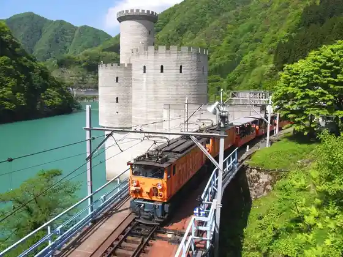
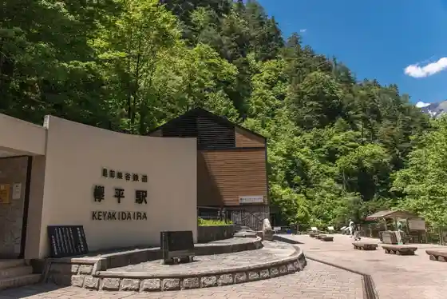
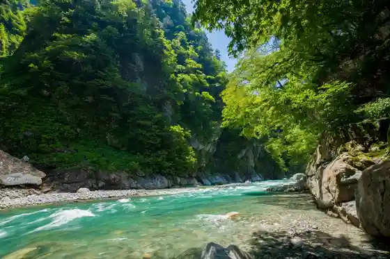
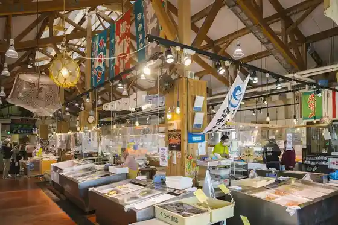

Kurobe Gorge Torokko Densha / Kurobe Gorge
Kurobe, Toyama · 0765-62-1011 · Official / source link

Keyakidaira
Kurobe, Toyama · 0765-62-1011 · Official / source link

Kane Tsuri Onsen Kane Tsuri Kawara
Kurobe, Toyama · 0765-62-1103 · Official / source link

Unazuki Onsen
Kurobe, Toyama · 0765-62-1021 · Official / source link
Sakana no Eki (Kiji)
Kurobe, Toyama · 0765-57-0192 · Official / source link

Yuya FUROBAKKA
Kurobe, Toyama · 0765-56-5026 · Official / source link
Yamabiko Hashi / Yamabiko Promenade
Kurobe, Toyama · 0765-62-1515 · Official / source link
Kurobe Unazuki Onsen
Kurobe, Toyama · 0765-62-1311 · Official / source link
Roadside Station KOKO Kurobe
Kurobe, Toyama · 0765-54-3266 · Official / source link
Kajika
Kurobe, Toyama · 0765-62-1505 · Official / source link
Ishida Fisshariina Tsuri Sambashi
Kurobe, Toyama · 0765-52-5777 · Official / source link
Serene Art Museum (Kurobe Geijutsu Sozo Center)
Kurobe, Toyama · 0765-62-2000 · Official / source link
Kurobe Gorge Fu Sarutobi Narabini Oku Shozan
Kurobe, Toyama · 0765-62-1800 · Official / source link
Arupenchiizu Ga Ki
Kurobe, Toyama · 0765-62-2055 · Official / source link
YKK Center Park
Kurobe, Toyama · 0765-54-8181 · Official / source link
TOGEN Kurobe Unazuki Onsen Togen
Kurobe, Toyama · Official / source link
Unazuki Shrine
Kurobe, Toyama · Official / source link
Unazuki Biiru Kan (Roadside Station (Unazuki) Nai)
Kurobe, Toyama · 0765-65-2277 · Official / source link
Kiji Machi Aruki
Kurobe, Toyama · 0765-57-2850 · Official / source link
YKK AP Gijutsukan
Kurobe, Toyama · 0765-54-8134 · Official / source link
Aimoto Hashi
Kurobe, Toyama · 0765-72-1133 · Official / source link
Kansaidenryoku Kurobe Kawa Denki Memorial Museum
Kurobe, Toyama · 0765-62-1334 · Official / source link
Fuku Taya Kashi Ho
Kurobe, Toyama · 0765-62-1144 · Official / source link
Unazuki Damu to Taimu Raikan
Kurobe, Toyama · 0765-62-9071 · Official / source link
Aimono Kombu
Kurobe, Toyama · 0765-57-0321 · Official / source link
Kurobe Gorge Onsen Gun (Kurobe)
Kurobe, Toyama · 0765-62-1800 · Official / source link
Himi Kitokito Hisashi Shi Kurobe Mise
Kurobe, Toyama · 0765-57-2488 · Official / source link
Kurobe Ashita Campground (Doyamarando)
Kurobe, Toyama · 0765-65-1567 · Official / source link
Kafe Motsuaruto
Kurobe, Toyama · 0765-62-1255 · Official / source link
En Raku
Kurobe, Toyama · 0765-62-1211 · Official / source link
Oedo Onsen Monogatari Unazuki Gu Land Hotel
Kurobe, Toyama · 050-3615-3456 · Official / source link
Guranvirio Hotel Unazuki Onsen
Kurobe, Toyama · 050-5211-5770 · Official / source link
Matsu Sakura Kaku no Garden
Kurobe, Toyama · 0765-54-0225 · Official / source link
Kurobe Bokujo Makiba no Kaze
Kurobe, Toyama · 0765-52-2604 · Official / source link
Kurobe Kawa Kyanioningu
Kurobe, Toyama · 0765-57-2850 · Official / source link
En Tsui Tera So
Kurobe, Toyama · 0765-62-1234 · Official / source link
Tomiju Shi
Kurobe, Toyama · 0765-56-8066 · Official / source link
Kurobe Yoshida Science Museum
Kurobe, Toyama · 0765-57-0610 · Official / source link
Sobo Tani Campground
Kurobe, Toyama · 0765-62-1038 · Official / source link
Onsen Funsui
Kurobe, Toyama · Official / source link
San Ryutei
Kurobe, Toyama · 0120-418-044 · Official / source link
Kokoku Sei Shuzo
Kurobe, Toyama · 0765-56-8028 · Official / source link
Fiiru Unazuki
Kurobe, Toyama · 0765-62-9520 · Official / source link
Unazuki Onsen Ski Area
Kurobe, Toyama · 0765-62-1757 · Official / source link
Miyano Sports Park
Kurobe, Toyama · 0765-54-1236 · Official / source link
So Kage Lookout
Kurobe, Toyama · 0765-54-2111 · Official / source link
Eki no Ashiyu (Kuronagi)
Kurobe, Toyama · Official / source link
Unazuki no Juji Ishi
Kurobe, Toyama · 0765-54-2111 · Official / source link
Kiji no Kyodo Arai Ba
Kurobe, Toyama · 0765-54-2111 · Official / source link
Shirayuki Yama Zengyo Tera
Kurobe, Toyama · 0765-65-0055 · Official / source link
Kurobe Kokusai Bunka Center (Korare)
Kurobe, Toyama · 0765-57-1201 · Official / source link
Kurobe Fureai Koryu Kan (Akoya no)
Kurobe, Toyama · 0765-52-3240 · Official / source link
Kurobe Kohoku Bohatei Lighthouse
Kurobe, Toyama · Official / source link
Hotel Kurobe
Kurobe, Toyama · 0765-62-1331 · Official / source link
Shusai Yasogami
Kurobe, Toyama · 0765-56-8015 · Official / source link
Kurobe O no Numa Taiken Koryu Shisetsu Tochi Baths
Kurobe, Toyama · 0765-62-1122 · Official / source link
Heiwa no Zo
Kurobe, Toyama · 0765-54-2111 · Official / source link
Unazuki Tomo Gakkan
Kurobe, Toyama · 0765-65-1010 · Official / source link
Akua Park (Kurobe Joka Center Nai)
Kurobe, Toyama · 0765-54-4761 · Official / source link
Kurobe Art Museum
Kurobe, Toyama · 0765-52-5011 · Official / source link
Guriimbijinesu Hashimoto
Kurobe, Toyama · 0765-32-5435 · Official / source link
Kiji Kamaboko Yugengaisha
Kurobe, Toyama · 0765-56-8064 · Official / source link
Ashiyu (Omokage)
Kurobe, Toyama · Official / source link
Karei Sawa Forest Park Campground
Kurobe, Toyama · 0765-54-2111 · Official / source link
Sumibi Yakiniku (Shichirin)
Kurobe, Toyama · 0765-62-1123 · Official / source link
Ibuki
Kurobe, Toyama · 0765-52-3199 · Official / source link
Iizawa Shoyuaji So Mise (Yamaden)
Kurobe, Toyama · 0765-56-8208 · Official / source link
Maru Chusui San Hokuyo no Kan
Kurobe, Toyama · 0765-56-9138 · Official / source link
Juni Kan no Yosui
Kurobe, Toyama · 0765-52-0262 · Official / source link
Green Park Oshima
Kurobe, Toyama · 0765-52-0158 · Official / source link
Kafe Bonfii no
Kurobe, Toyama · 0765-62-9520 · Official / source link
no Village Bunka Densho Tateyama Honke
Kurobe, Toyama · 0765-65-2038 · Official / source link
Jika Baisen Mizudashi Kohii Mizu no Tokei
Kurobe, Toyama · 0765-57-3251 · Official / source link
Ashiyu (Momohara)
Kurobe, Toyama · 0765-62-1126 · Official / source link
Shoei Do
Kurobe, Toyama · 0765-54-0002 · Official / source link
Shimizu Village
Kurobe, Toyama · 0765-54-2111 · Official / source link
O Shokuji Shosa Saya
Kurobe, Toyama · 0765-62-1620 · Official / source link
Ishida Hama Beach
Kurobe, Toyama · 0765-54-2111 · Official / source link
Seeds (Shiizu)
Kurobe, Toyama · 0765-65-9519 · Official / source link
Shu Ippuku Tokoro
Kurobe, Toyama · 0765-52-0760 · Official / source link
Ashita no Dai Sakura
Kurobe, Toyama · 0765-65-0526 · Official / source link
Famiriirojji Hatago Ya Kurobe Mise
Kurobe, Toyama · 0765-56-8848 · Official / source link
Akoya no Burial Mound
Kurobe, Toyama · 0765-54-2111 · Official / source link
Yoshoku Danranya
Kurobe, Toyama · 0765-33-5655 · Official / source link
Buronzu Zo
Kurobe, Toyama · 0765-62-1515 · Official / source link
Toyama Kare (Kantoriikitchin)
Kurobe, Toyama · 0765-57-0369 · Official / source link
Kami Taira
Kurobe, Toyama · 0765-52-4788 · Official / source link
Kurobe Yakusho
Kurobe, Toyama · 0765-54-2111 · Official / source link